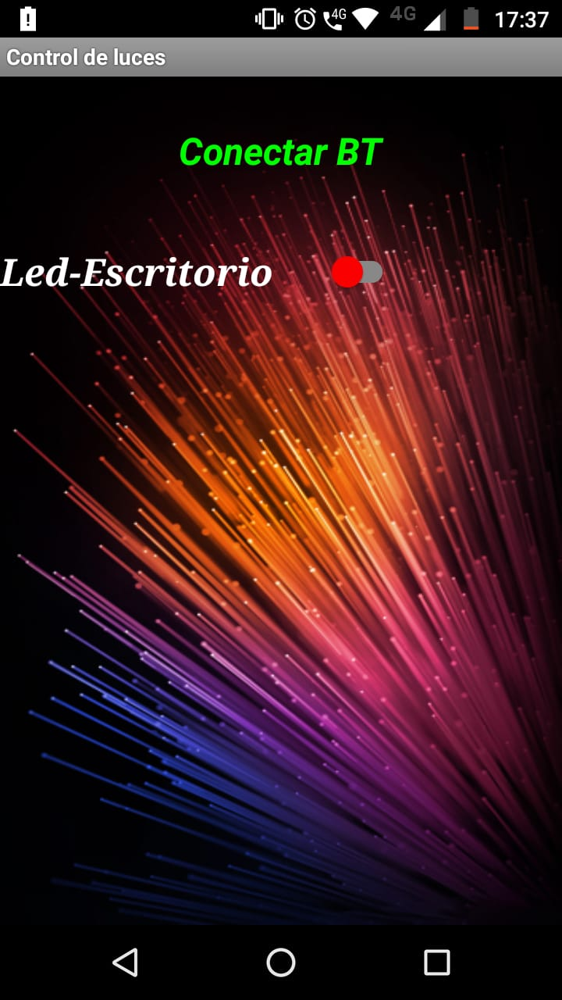
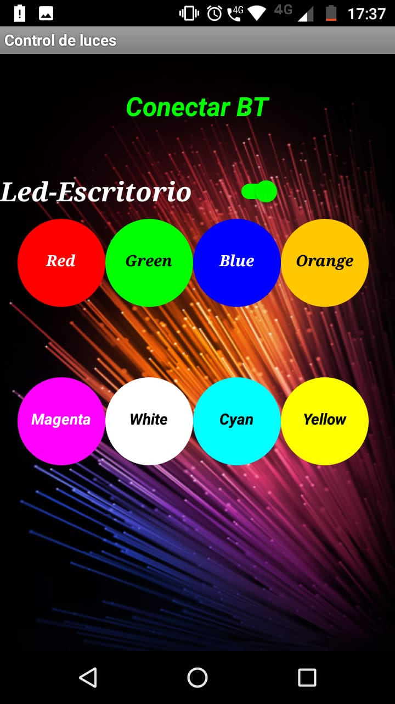
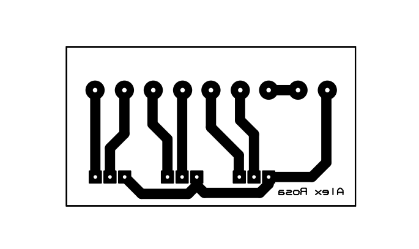
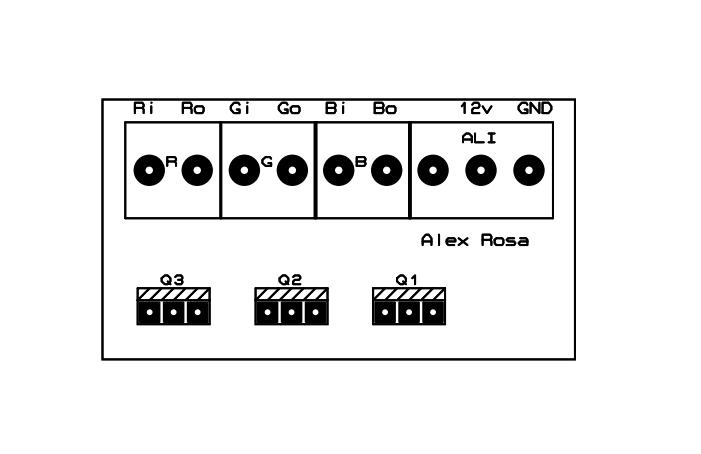

Arduino es una plataforma electrónica de código abierto basada en hardware y software fáciles de usar. Las placas Arduino pueden leer entradas (luz en un sensor, un dedo en un botón o un mensaje de Twitter) y convertirlo en una salida, activando un motor, encendiendo un LED, publicando algo en línea. Puede decirle a su tablero qué hacer enviando un conjunto de instrucciones al microcontrolador en el tablero. Para hacerlo, utiliza el lenguaje de programación Arduino (basado en Wiring ) y el Software Arduino (IDE), basado en Processing .
A lo largo de los años, Arduino ha sido el cerebro de miles de proyectos, desde objetos cotidianos hasta complejos instrumentos científicos. Una comunidad mundial de creadores (estudiantes, aficionados, artistas, programadores y profesionales) se ha reunido en torno a esta plataforma de código abierto, sus contribuciones se han sumado a una increíble cantidad de conocimiento accesible que puede ser de gran ayuda tanto para principiantes como para expertos.
Arduino nació en el Ivrea Interaction Design Institute como una herramienta fácil para la creación rápida de prototipos, dirigida a estudiantes sin experiencia en electrónica y programación. Tan pronto como llegó a una comunidad más amplia, la placa Arduino comenzó a cambiar para adaptarse a las nuevas necesidades y desafíos, diferenciando su oferta desde placas simples de 8 bits hasta productos para aplicaciones de IoT, wearable, impresión 3D y entornos integrados. Todas las placas Arduino son completamente de código abierto, lo que permite a los usuarios construirlas de forma independiente y eventualmente adaptarlas a sus necesidades particulares. El software también es de código abierto y está creciendo gracias a las contribuciones de los usuarios de todo el mundo.
Luces RGB -Control bluetooth-
Esté fué mi primer proyecto para adentrarme en el mundo de Arduino. El proyecto consiste en la creación de una aplicación para android la cual, mediante los servicios bluetooth, del dispositivo android, logre controlar la intencidad, los colores y la intencidad de la tira led(RGB).
Las tres partes del proyecto:
- Desarrollo de aplicación para dispositivo Android
- Circuito electronico de comunicación Arduino-led(RGB)
- Configuración de modulo bluetooth y carga de codigo en placa Arduino
1-Desarrollo de aplicación para dispositivo Android:
Para crear la aplicación que se va a encargar de enviar las ordenes a la placa arduino para controlar a la tira led(RGB) utilicé App Inventor, App Inventor es un entorno de desarrollo de software creado por Google Labs para la elaboración de aplicaciones destinadas al sistema operativo Android, y me quedo asi:
- El bloque de codigo de la aplicacion en App Inventor me quedo de la siguiente manera:

- El diseño y la vista de la palicación desde el celular(Apagado) es la siguiente:

- El diseño y la vista de la palicación desde el celular(Encendido) es la siguiente:

- Descargar App aquí
2-Ensamble de circuito electronico de comunicación Arduino-led(RGB):
El circuito electronico para este proyecto es sumamente sencillo solo es necesario 3 transistores Mosfet IRF54N y una placa de cobre donde montaremos el circuito.
La placa tendrá el siquiente esquema de pistas:

y el siguiente esquema de componentes:

ambos esquemas podran descargarlo desde aquí
3-Configuración de modulo bluetooth y carga de codigo en placa Arduino:
El modulo bluetooth para arduino que utilicé fue el HC05 y para la configuración del mismo utlice la placa arduino Uno y el codigo es el siguiente:

- Descargar codigo aquí.
- Comandos AT y explicacion de como configurar aqui.
En la placa arduino cargamos el siguiente codigo: